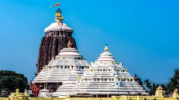
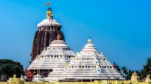
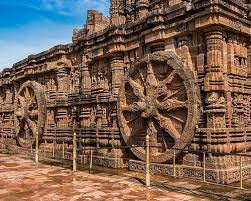
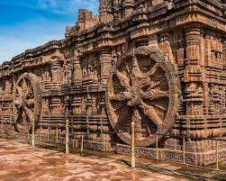
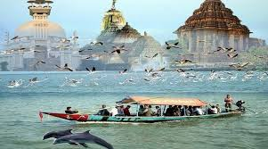
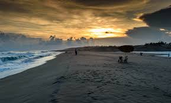
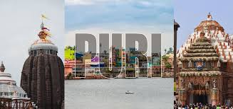
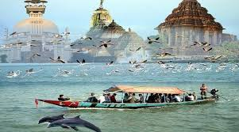
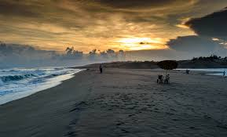
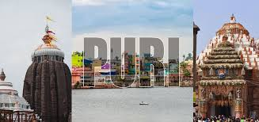

Jagannath Temple
Major pilgrimage center with daily rituals and centuries-old traditions.
Puri is one of India’s Char Dham pilgrimage sites and home to the famous Jagannath Temple. Its long coastline, especially Golden Beach, makes it a dual temple-plus-beach destination.
Chilika Lake is nearby and known for boating, migratory birds and Irrawaddy dolphin sightings, making Puri a complete spiritual and nature combo trip.
Major pilgrimage center with daily rituals and centuries-old traditions.
Clean, lifeguard-patrolled beach ideal for sunrise and evening walks.
Boating area known for dolphins, birds and calm brackish waters.
360° coastal views from a tall lighthouse tower.
Historic temple known for sacred rituals and prasadam.
Clean, wide beach perfect for walking, photography and relaxing evenings.
Boat ride through calm waters with chances of spotting Irrawaddy dolphins.
Temple + Beach + Nature.
Quick visit
Relaxed
3–4 days
Sea-facing resorts near Golden Beach.
Best for families and couples.
Easy access to Jagannath Temple.
Ideal for pilgrims.
Quiet hotels close to the beach but away from heavy crowds.
Good mid-range options.
 

 

 





Temple rules, beach habits and safety.